Eine unbekannte Blüte bestimmen, Goldfelder finden oder einen Weg zum Ziel lernen: Du untersuchst, wie Lernalgorithmen aus Beispielen und Rückmeldungen brauchbare Entscheidungen erzeugen. Dabei rechnest du selbst, verfolgst Abläufe und überprüfst Modelle im Experiment.
Teil 2: Lernvarianten, Trainingsdaten und Modellbewertung · Teil 1: KI-Grundlagen
Beim Nächste-Nachbar-Verfahren vergleichst du ein neues Objekt mit bekannten, beschrifteten Beispielen. Die Grundidee: „Das ist so etwas wie dieses bekannte Beispiel.“ Im Iris-Datensatz besitzt jede Blüte vier Messwerte: Länge und Breite von Kelchblatt (sepal) und Kronblatt (petal), jeweils in Zentimetern. Zunächst betrachten wir nur zwei Merkmale.
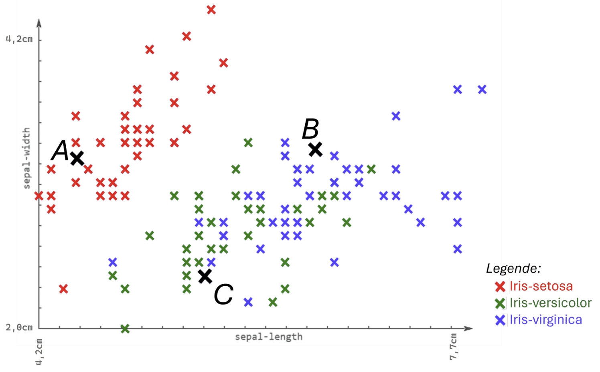
Bei vergleichbar skalierten numerischen Merkmalen kannst du räumliche Nähe als Ähnlichkeit verwenden. Die euklidische Distanz ist der direkte Abstand zweier Punkte. In zwei Dimensionen liefert der Satz des Pythagoras die Rechnung.
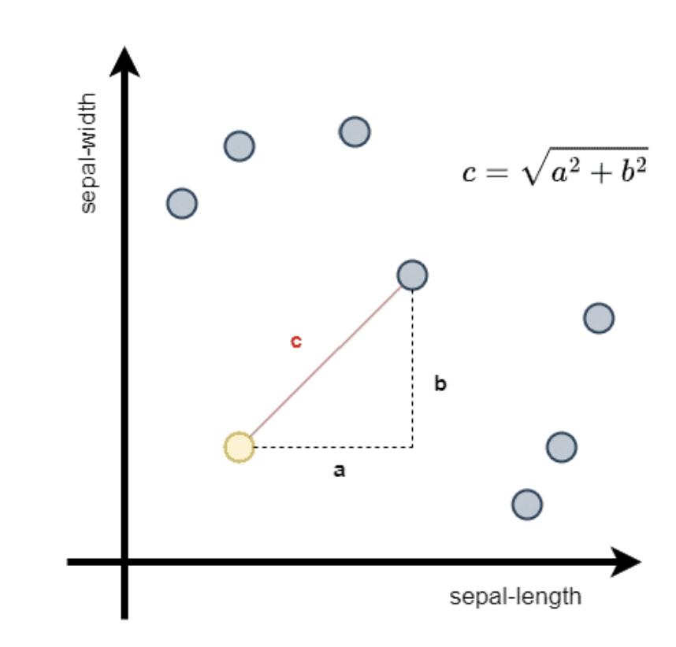
d(x, y) = √((x₁ − y₁)² + (x₂ − y₂)²)
Allgemein: d(x, y) = √(Σᵢ (xᵢ − yᵢ)²)
Verwende die Reihenfolge (Kelchblattbreite, Kelchblattlänge). Probe B hat (3,4; 6,5) cm, der hier betrachtete grüne Versicolor-Nachbar (3,3; 6,7) cm und der blaue Virginica-Nachbar (3,2; 7,0) cm. Welcher dieser beiden Nachbarn liegt näher?
Die Formel funktioniert auch ohne zeichnbares Koordinatensystem. In der Reihenfolge (sepal-length, sepal-width, petal-length, petal-width) lautet die neue Probe (4,9; 3,0; 1,4; 0,2). Vergleiche sie mit zwei ausdrücklich ausgewählten Übungspunkten: S = (5,0; 3,0; 1,4; 0,2), Label Setosa, und V = (6,0; 3,0; 4,5; 1,5), Label Versicolor.
Für Tippfehler eignet sich die Levenshtein-Distanz: die kleinste Anzahl von Einfügungen, Löschungen und Ersetzungen. Haus → Maus braucht eine Ersetzung; Bar → Bir → Bier braucht zwei Schritte. Bei Richtungspfeilen ist eher der Winkel oder eine Kosinus-Ähnlichkeit relevant, unabhängig von der Länge der Pfeile.
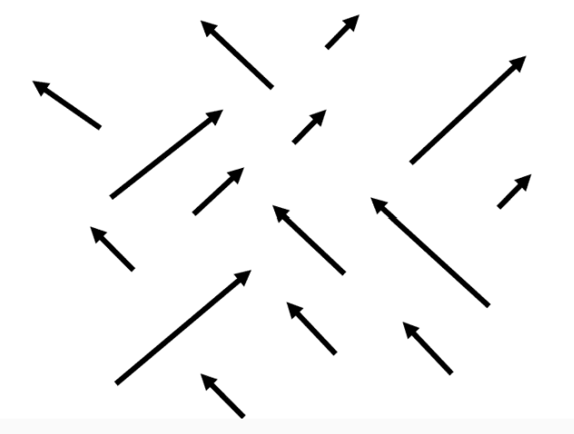
Ein einzelner Ausreißer kann 1-NN stark beeinflussen. Beim k-nächste-Nachbarn-Algorithmus stimmen stattdessen die k ähnlichsten Trainingsbeispiele über das Label ab. Kleine k-Werte erzeugen oft sehr kleinteilige Entscheidungsbereiche; größere k-Werte glätten sie, können aber kleine Gruppen überdecken.
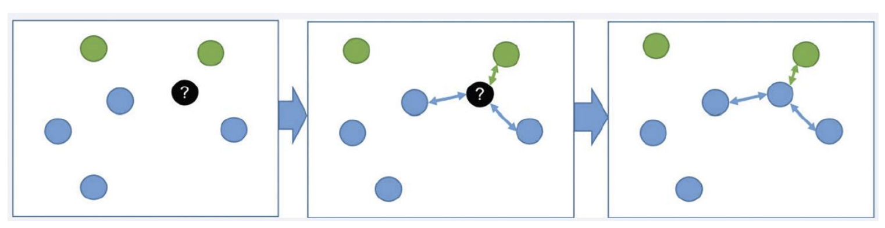
| Rang | Klasse | d |
|---|
k-NN speichert die Trainingsbeispiele, statt beim Training einen kompakten Satz von Regeln zu bilden. Deshalb zählt es zu den Lazy Learners. Vorbereitung wie Skalierung oder ein Suchindex ist trotzdem möglich. Beim einfachen vollständigen Durchsuchen werden für n Beispiele mit d Merkmalen ungefähr n · d Rechenschritte für die Distanzen benötigt. Eine vollständige Sortierung kostet zusätzlich Aufwand; eine Auswahl der besten k oder Suchindizes können helfen.
Ein größeres k multipliziert nicht automatisch jede Distanzrechnung mit k. Entscheidend sind Datenmenge, Merkmalszahl und Suchverfahren. Viele gespeicherte Beispiele benötigen viel Speicher. Die eingefärbten Bereiche im Labor zeigen: Auch dieses Verfahren verallgemeinert auf neue Punkte.
Weiterforschen mit Snap!: Stelle den Ablauf als Blöcke dar: Abstände berechnen → mit Label speichern → sortieren → erste k auswählen → Klassen zählen. Snap! ist eine blockbasierte Sprache; eigene Blöcke können komplexe Teilaufgaben kapseln. Ohne konkreten Projektlink wird hier kein fertiges Fremdprogramm vorausgesetzt.
Ein Modell ist eine zweckmäßige Vereinfachung eines Ausschnitts der realen Welt. Es lässt Unwichtiges weg und erhält die Informationen, die für eine Aufgabe gebraucht werden. Ein gelerntes Modell ist zugleich eine überprüfbare Hypothese über Zusammenhänge und eine ausführbare Vorschrift für Vorhersagen.
Ein Entscheidungsbaum stellt an jedem inneren Knoten eine Frage zu einem Merkmal. Die Antwort bestimmt den nächsten Zweig. Du beginnst an der Wurzel und folgst genau einem Pfad, bis ein Blatt erreicht ist. Dort steht die Ausgabe. Die folgenden Beispiele verwenden binäre Ja-Nein-Tests; andere Baumverfahren können auch mehr Zweige besitzen.
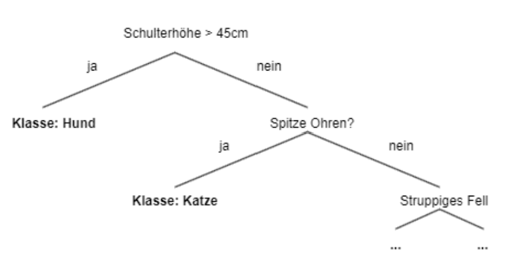
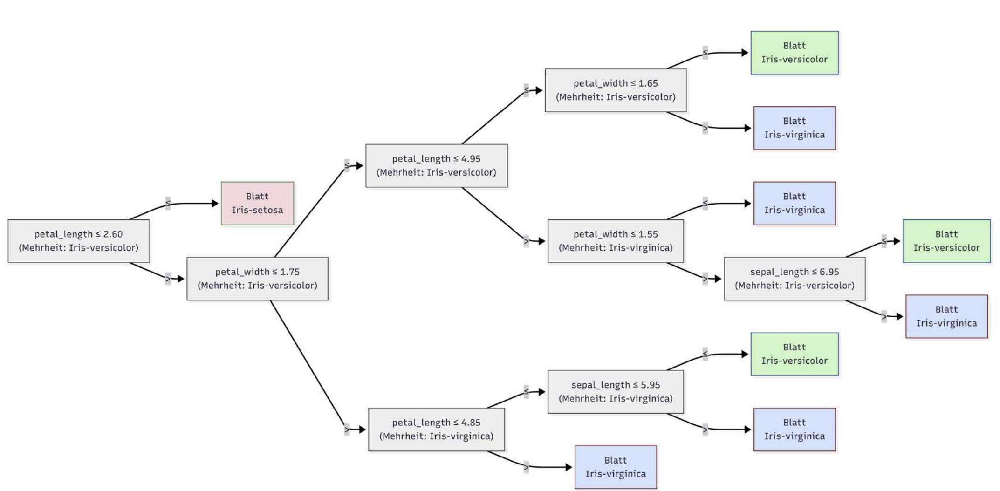
Verfolge die Probe: sepal-length = 5,9, sepal-width = 3,0, petal-length = 5,1, petal-width = 1,8. Verwende die tatsächlich im Bild stehenden Tests, insbesondere petal-length ≤ 4,85 im rechten Ast.
Ein Lernalgorithmus erhält viele beschriftete Beispiele. Er sucht an jedem Knoten einen Split, der die Daten in möglichst homogene Gruppen teilt: In einer Gruppe sollen möglichst viele Beispiele dasselbe Label haben. Danach wird das Verfahren für beide Teilmengen wiederholt, also rekursiv.
Ein Blatt entsteht beispielsweise, wenn die Teilmenge nur noch eine Klasse enthält, die maximale Tiefe erreicht ist oder weitere Teilungen nicht ausreichend helfen. Bei gemischten Blättern wird etwa die Mehrheitsklasse ausgegeben. Die Wahl eines Merkmals und einer Schwelle erfolgt anhand eines Gütekriteriums, nicht durch „Verstehen“ der E-Mails.
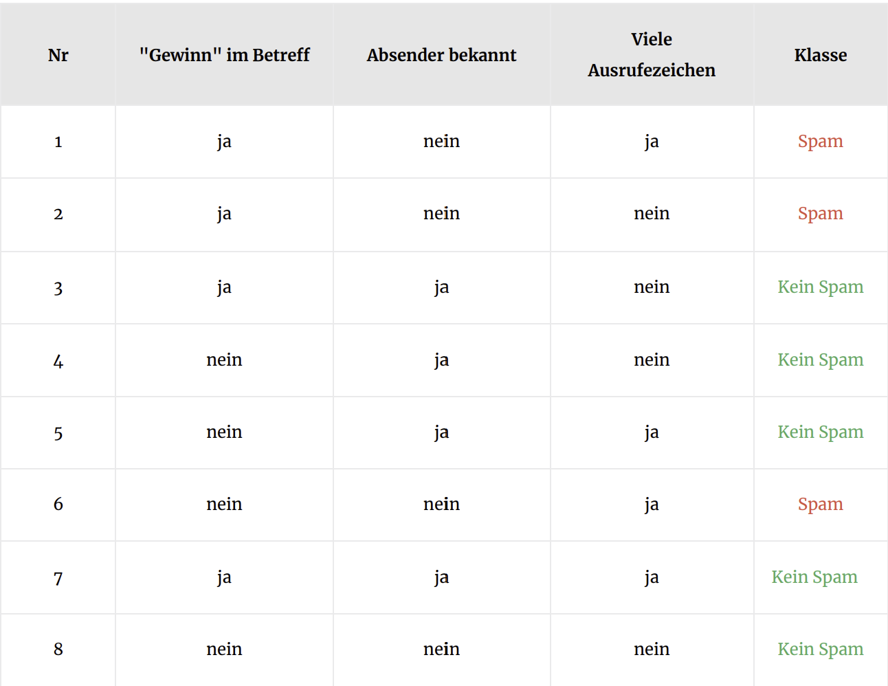
Für zwei Klassen mit Anteilen p und q gilt Gini = 1 − p² − q². Ein reiner Knoten hat Gini 0. Bei einem Split werden die Unreinheiten der Kinder nach der Anzahl ihrer Beispiele gewichtet. Ein kleinerer gewichteter Wert bedeutet eine homogenere Aufteilung.
| Merkmal | Ja-Zweig | Nein-Zweig | Gewichtete Gini-Unreinheit |
|---|---|---|---|
| „Gewinn“ im Betreff | 2 Spam, 2 normal | 1 Spam, 3 normal | 0,4375 |
| Absender bekannt | 0 Spam, 4 normal | 3 Spam, 1 normal | 0,1875 |
| Viele Ausrufezeichen | 2 Spam, 2 normal | 1 Spam, 3 normal | 0,4375 |
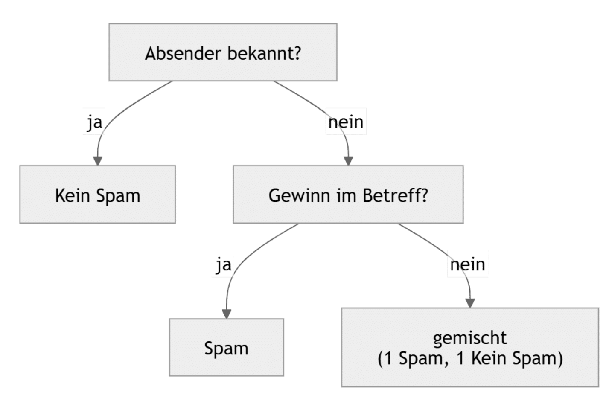
Das Ziel ist nicht, jedes Trainingsbeispiel perfekt abzubilden. Das Modell soll auf neuen, passenden Daten funktionieren. Bei Overfitting werden zufällige Details, Messfehler oder Ausreißer der Trainingsdaten mitgelernt. Bei Underfitting ist das Modell zu einfach, um wichtige Zusammenhänge abzubilden.
Ein sehr tiefer Baum kann für fast jedes Trainingsbeispiel eine eigene Sonderregel erzeugen. Hohe Trainingsgenauigkeit und deutlich schlechtere Validierungsleistung sind ein Warnsignal für Überanpassung.
Ein Baum mit nur einem Split kann notwendige Unterschiede übersehen. Schwache Leistung auf Trainings- und Validierungsdaten kann auf Unteranpassung hinweisen.
Im bereitgestellten Vergleich erreicht ein Baum mit maximaler Tiefe 6 auf einer kleinen Testmenge 100 %, ein Baum mit Tiefe 10 dagegen 93,3 %. Das kann zu Überanpassung passen, beweist sie aber nicht. Bei 15 Tests entspricht ein einziger zusätzlicher Fehler bereits einem Rückgang von 100 % auf rund 93,3 %. Datenauswahl und Zufall spielen eine Rolle.
Wähle Baumtiefe und k anhand von Validierungsdaten oder Kreuzvalidierung. Den abschließenden Test nutzt du erst nach dieser Wahl. Sonst optimierst du unbeabsichtigt auf den Test und seine Aussagekraft geht verloren.
Kleine Entscheidungsbäume sind gut interpretierbar: Du kannst jeden Test auf einem Entscheidungspfad prüfen. Sie sind aber nicht die einzigen interpretierbaren Modelle; auch einfache lineare Modelle oder Regellisten können verständlich sein. Sehr große Bäume verlieren diesen Vorteil. Nachvollziehbarkeit allein garantiert keine Richtigkeit oder Fairness.
Bei klassischen Batch-Verfahren wird ein Baum auf einem gesamten Datensatz aufgebaut. Neue Beispiele erfordern häufig erneutes Training. Es gibt jedoch auch inkrementelle Baumverfahren. Die Aussage „Bäume können grundsätzlich nicht schrittweise lernen“ wäre deshalb zu pauschal.
Beim unüberwachten Lernen liegen keine vorgegebenen Ziel-Labels vor. Du kannst beispielsweise ähnliche Kundengruppen, Dokumente oder Musikstücke gruppieren und ungewöhnliche Transaktionen untersuchen. Ein Cluster ist eine Gruppe von Punkten, die sich nach den gewählten Merkmalen ähnlicher sind als Punkte außerhalb der Gruppe.
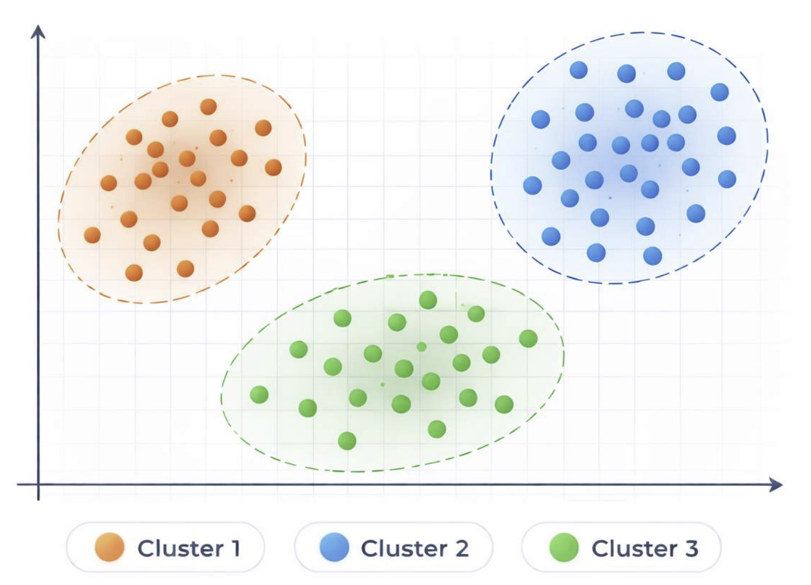
Bei k-Means legst du zuerst die Anzahl k der Cluster fest. Jeder Cluster wird durch einen Zentroiden repräsentiert, den Mittelwert seiner Punktkoordinaten. Der Algorithmus beginnt mit Startzentren, ordnet jeden Punkt dem nächsten Zentrum zu und berechnet dann aus jeder Gruppe einen neuen Mittelwert. Dieser Wechsel wird wiederholt, bis sich die Zentren kaum noch ändern oder eine Iterationsgrenze erreicht ist.
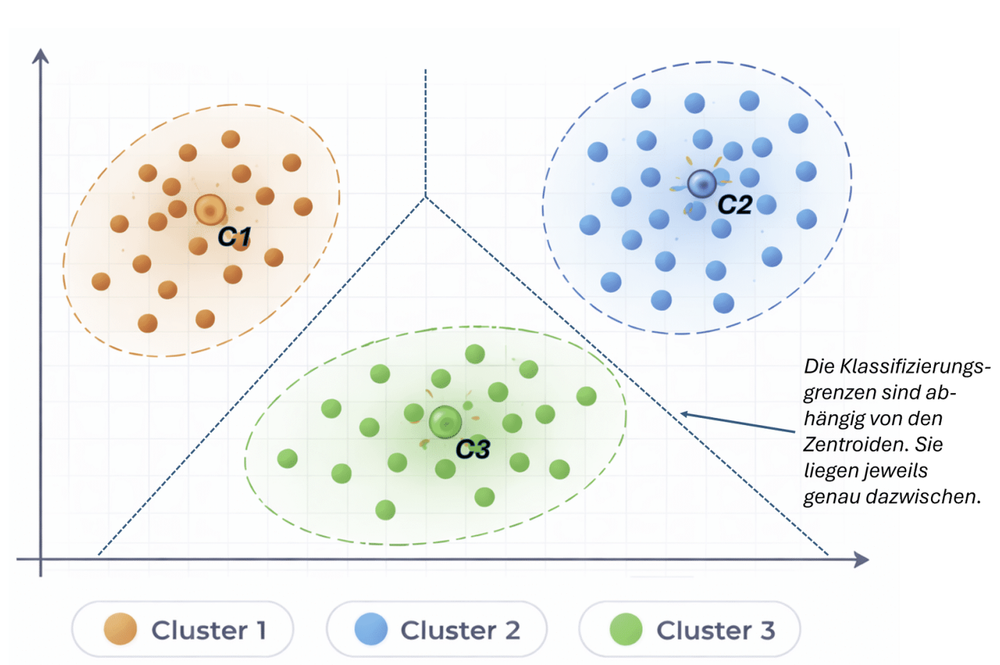
Kosten (SSE) = Σ über alle Punkte ‖Punkt − zugeordnetes Zentrum‖²
k-Means verringert die Summe der quadrierten Abstände, nicht einfach nur die Summe der Abstände. Das macht die Wahl des arithmetischen Mittelwerts als Zentrum sinnvoll. Das Ergebnis kann von den Startzentren abhängen und muss nicht das global beste sein. Weniger Kosten bei größerem k bedeuten nicht automatisch sinnvollere Gruppen.
Cluster können beim Beschriften großer Datenmengen helfen. Ihre Bedeutung muss aber von Menschen geprüft werden. Ein Punkt mit großem Abstand zu seinem Zentrum kann auffällig sein; k-Means ist damit noch kein allgemeiner zuverlässiger Anomaliedetektor. Auffällig bedeutet auch nicht automatisch betrügerisch.
Du kennst die gemeldeten Fundorte, aber keine fertigen Goldfeld-Labels. Deine Grabungsteams sollen möglichst zentral in den Fundgruppen stehen. Im Modell ist ein Team ein Zentroid und ein Goldfund ein Datenpunkt. Das Szenario greift die Goldrush-Lernidee aus dem bereitgestellten Material auf; das folgende Labor ist eine eigene vereinfachte Umsetzung.
k Grabungsorte anhand der Fundkoordinaten finden.
Die Summe der quadrierten Abstände vom Fund zum zugeordneten Team verringern.
Unbeschriftete Fundkoordinaten. Eingabe: Punkte. Ausgabe: Zentren und Gruppenzuordnungen.
Ein gutes Clustering ist keine Garantie, dass an einem Mittelpunkt tatsächlich Gold liegt.
| Team | x | y | Funde |
|---|
Beim verstärkenden Lernen handelt ein Agent in einer Umgebung. Er sammelt Erfahrungen als Zustandsübergänge und Belohnungen und verbessert seine Policy, also die Regel zur Aktionswahl. Anders als beim überwachten Lernen bekommt er nicht für jeden Zustand die richtige Aktion vorgemacht.
Ein Agent nimmt seine Umgebung wahr und wirkt zielgerichtet auf sie ein. Nicht jeder Agent lernt. Lernende Agenten können ihre Daten selbst durch Interaktion erzeugen, benötigen dafür aber oft sehr viele Versuche. Auch Lernen aus bereits aufgezeichneten Erfahrungen ist möglich; „RL braucht nie vorhandene Daten“ wäre falsch.
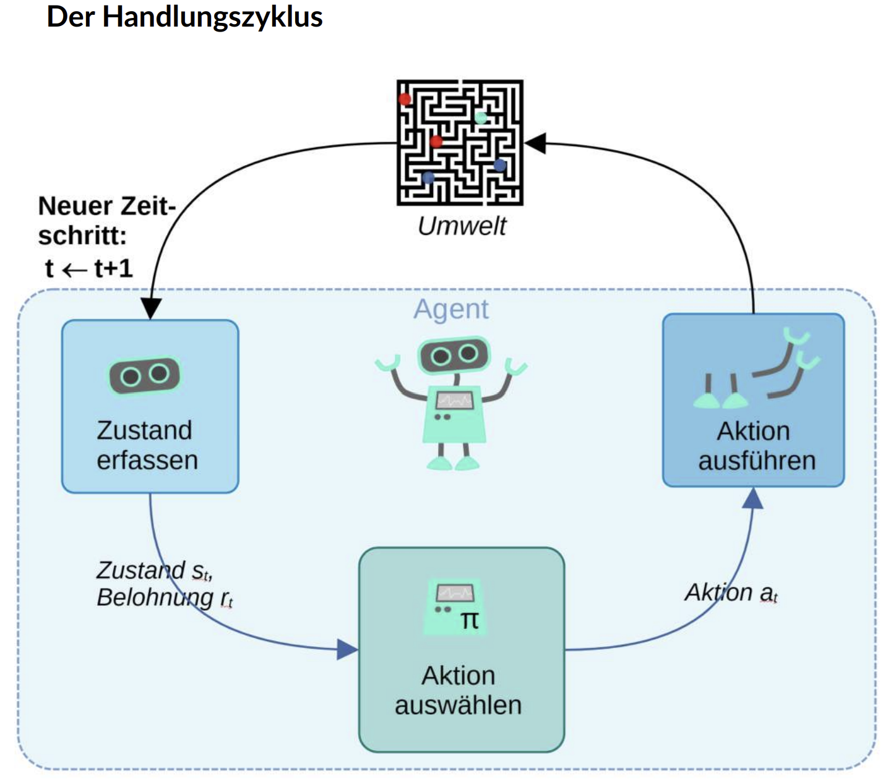
| Begriff | Bedeutung im Labor |
|---|---|
| Zustand s | Die aktuelle Rasterposition. |
| Aktion a | Ein Schritt nach oben, rechts, unten oder links. |
| Belohnung r | +10 am Ziel, −10 in einer Falle, −0,1 pro sonstigem Schritt. |
| Policy π | Auswahlregel für eine Aktion in einem Zustand. |
| Episode | Ein Versuch vom Start bis Ziel, Falle oder einer Grenze von 150 Schritten. |
| Q(s, a) | Gelernte Schätzung der künftig erreichbaren, diskontierten Belohnung für eine Aktion in einem Zustand. |
Eine Q-Tabelle bewertet Zustands-Aktions-Paare. Nach einer Aktion wird ihr Wert in Richtung der beobachteten Belohnung plus der besten geschätzten Zukunftserwartung verschoben. So können sich gute Erwartungen vom Ziel aus rückwärts entlang besuchter Wege ausbreiten. Diese Tabelle ist ein Wertemodell, kein vollständiges Modell der Umgebung.
Qneu(s, a) = Q(s, a) + α · [r + γ · maxa′ Q(s′, a′) − Q(s, a)]
α bestimmt die Stärke des Updates; γ gewichtet künftige Belohnungen. In einem echten Endzustand entfällt der Zukunftsterm. Das Lernziel ist eine hohe erwartete Belohnungssumme, nicht nur eine große unmittelbare Belohnung. Bei einer Zeitbegrenzung ist die Episode abgebrochen; die Zukunftserwartung des erreichten Zustands kann trotzdem zum Update beitragen.
Eine ε-greedy-Policy wählt mit Wahrscheinlichkeit ε eine zufällige Aktion (Exploration), sonst eine Aktion mit dem höchsten aktuellen Q-Wert (Exploitation). Ohne Erkunden können bessere Wege unentdeckt bleiben. Zu viel Zufall kann nach dem Lernen gute Wege unnötig verlassen.
| Aktion | Q-Wert |
|---|
Ein Spiel wie Flappy Bird lässt sich ebenso beschreiben: Zustand = Höhe und Abstand zu Hindernissen, Aktionen = steigen oder fallen lassen, Belohnung = Fortschritt ohne Kollision. Die geeignete Zustandsbeschreibung und Belohnung müssen festgelegt werden. Snap! eignet sich zum Erproben eigener Agentenprogramme.
Grundlage ist das bereitgestellte Unterrichtsmaterial. Die Simulationen verwenden synthetische Beispieldaten, keine echten Iris-Messreihen oder Goldfunde. Die Rechenbeispiele und Entscheidungspfade wurden mit den angegebenen Zahlen und Bildern abgeglichen.
Alle elf neuen Abbildungen stammen aus dem bereitgestellten Material und sind unverändert eingebunden. Die interaktiven Diagramme ergänzen sie; Bibliotheken und Lucide-Icons werden lokal ausgeliefert. Die Bezeichnung Goldrush und die didaktische Idee werden im Ausgangsmaterial T. Michaeli, S. Seegerer und S. Jatzlau zugeschrieben.